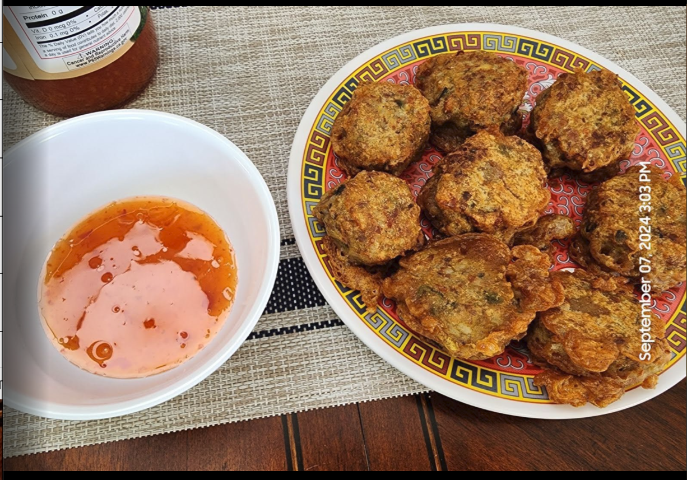

Tod Mun Pla

Ingredients
Fish Paste
- 2 lb pre-made Featherback fish paste or 2 lbs your favorite fish
- If making fish paste, you will need the following:
- 1 large egg
- 2 tbs fish sauce
- 3 tsp sugar
- 140 g red curry paste
- 5 kaffir lime leaves, chiffon
- 200 g long beans (green beans), cut
- 1 handful fresh basil, cut into ribbons
Dipping Sauce
- ½ C sweet chili sauce
- 3 tbs rice vinegar
- 2 shallots, finely sliced
- ½ small cucumber, thinly sliced
- 2 tbs peanuts, roasted and finely ground
Directions
- If you are making fish paste, process fish in a food processor until smooth.
- Add egg, fish sauce, and sugar and process until fully combined.
- If you are making fish paste or using pre-made, remove fish paste to a bowl and add curry paste, Kaffir lime leaves, long beans, and basil and incorporate with your hands or a wooden spoon until fully combined.
- Cover and let rest in the fridge for about 30 minutes.
- Remove from the fridge and form about 2 tbs of paste into a small patty with wet hands.
- Fry in 350° oil until golden brown, turning once to brown both sides.
- Remove to a wire rack and serve with dipping sauce.
- Once the fish cakes are all done, bring the oil up to 400 and fry them again to crisp the outside. This is optional
- For the sauce, combine the sweet chili sauce and rice vinegar and mix well.
- Pour over the top of the shallots and cucumber slices, mix well, and top with the ground peanuts.
Chef's Notes
- This recipe halves easily - divide the measurements in half for 1 lb of fish paste
Michael Fritsche
mbf@fritsche.org